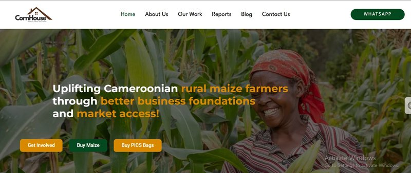

Cornhouse Website & Web App
Built and maintain Cornhouse's digital presence - designed and developed their website, and currently engineering a custom web application to support their internal operations.
Visit site ↗
Software engineering introduced me to systems. Data taught me how to measure them. Marketing taught me how to grow them. Today, I combine all three to build digital experiences that scale with purpose.
Built and maintain Cornhouse's digital presence - designed and developed their website, and currently engineering a custom web application to support their internal operations.
Visit site ↗
Scaled a tech education community from scratch using paid campaigns, content strategy, and community engagement. Managed campaigns end-to-end: audience research, ad creative, budget, and performance.
Directed full brand and campaign strategy for Skulup, a SaaS for training institutions. Built the brand from scratch, managed landing pages and funnel, and drove platform adoption across Cameroon.
Contributed as a junior software developer to the Apma mobile app at WWL Agro Consulting - a platform supporting agricultural value chain management across Cameroon.
I build you a professional website or web app that represents your brand and works for your business.
I make sense of your numbers so you always know what's working, what's not, and what to do next.
I plan and run your campaigns so the right people find you, trust you, and convert.
I keep your digital infrastructure running smoothly so you can focus on your business.
I help you identify repetitive tasks and replace them with smart, automated workflows - so your team spends time on what actually matters.